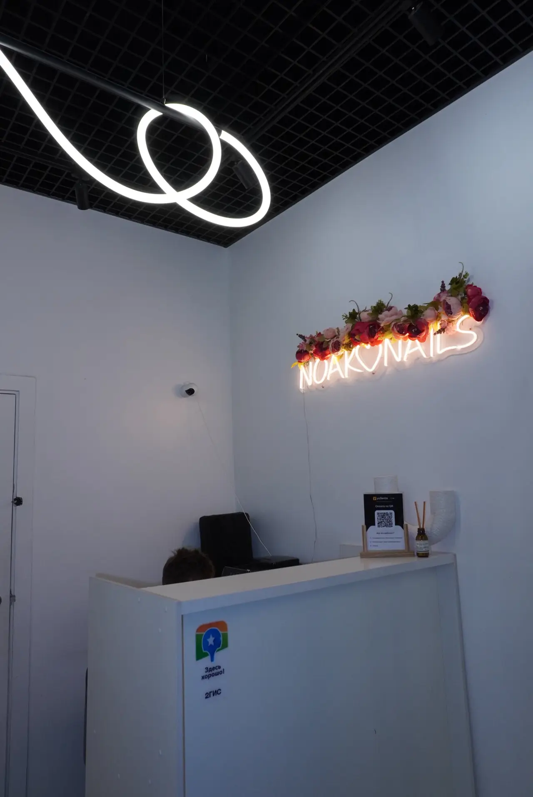
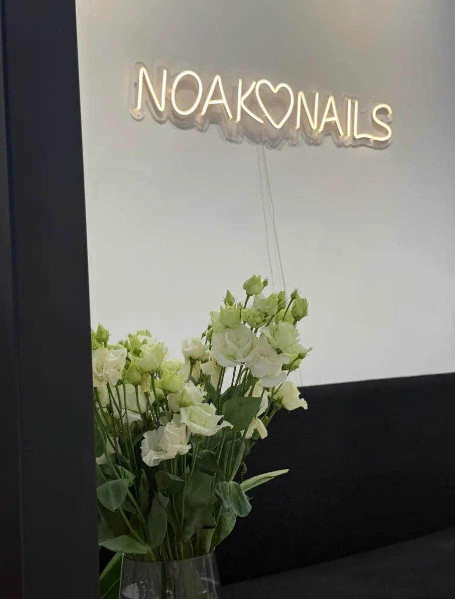
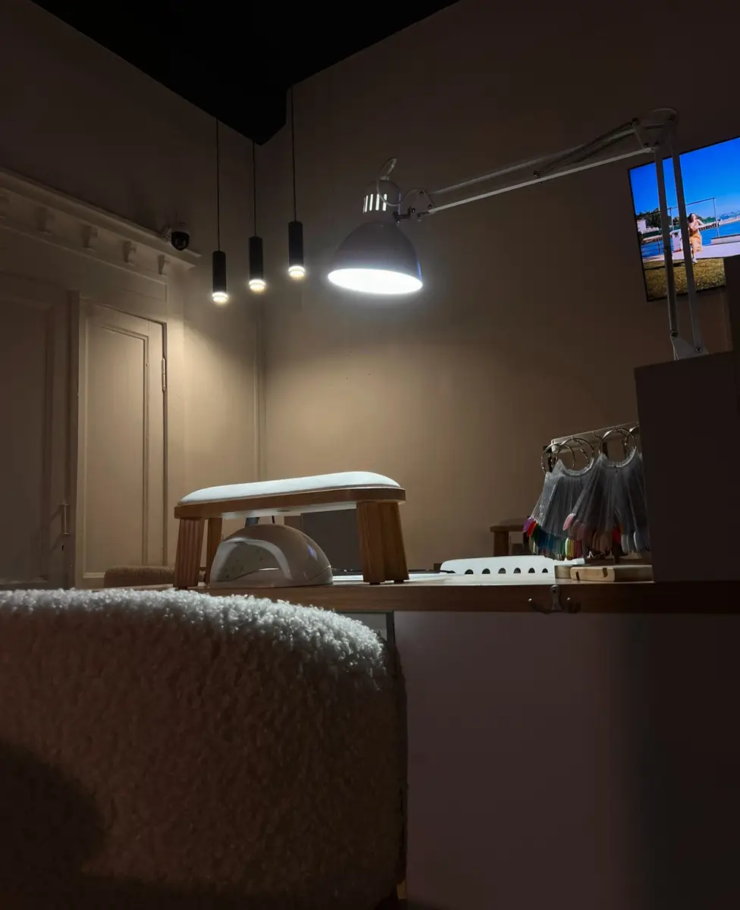
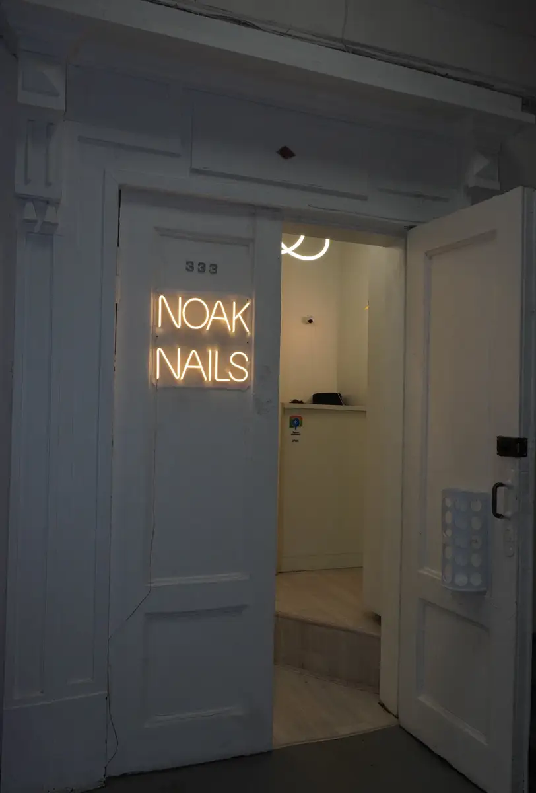

Ногтевая студия · Новосибирск
Маникюр, педикюр и мужской сервис на Советской, 18
Студия Noak Nails в Новосибирске: выберите услугу, день и время – чат откроется с готовым текстом. Цены на мужские услуги видны до записи.
- Ежедневно с 9:00 до 22:00
- Рейтинг 4,8, 71 отзыв
- Парковка, можно с собакой

Услуги и цены
На карточке студии на Яндекс.Картах названы три цены на мужские услуги. Остальное – услуги, отмеченные на карточке, цену называет администратор.
Мужской маникюр и педикюр
- Комплекс «Мужской маникюр»1 700 ₽
- Педикюр мужской (обработка пальчиков)1 900 ₽
- SMART-педикюр мужской2 400 ₽
Другие услуги
- Маникюруточнить
- Педикюруточнить
- Наращивание ногтейуточнить
- Артдизайнуточнить
Цены с вкладки «Товары и услуги» карточки на Яндекс.Картах (данные сервисов онлайн-записи). Остальные цены называет администратор при записи.
Как записаться
- 01
Выберите услугу, день и время
В блоке записи вверху страницы.
- 02
Нажмите «Записаться»
Откроется чат с готовым сообщением – останется его отправить.
- 03
Дождитесь ответа администратора
Если удобнее по телефону – позвоните, номер в контактах ниже.



Что говорят клиенты
Мужской маникюр и педикюр
На карточке отмечен мужской ногтевой сервис, а клиент в отзыве пишет, что ходит в студию на постоянной основе.
Идеальный маникюр за полтора часа
Одна из клиенток пишет про идеальный маникюр за полтора часа, другая отмечает аккуратную и быструю работу.
Уютно и вкусно
Клиентки хвалят атмосферу студии, вкусный кофе, чай и угощения.
Центр города
Клиентки отмечают удобное расположение студии, на карточке отмечена парковка.
Отзывы с Яндекс.Карт
«Очень люблю данную студию! Долго пыталась найти именно такое место. Отличный сервис для клиентов, чистота, ну и главный фактор - идеальный маникюр за 1.5 часа.»
Анастасия Г. · 3 октября 2025
«Замечательное место, удобное расположение, красивая и уютная студия. Маникюр мне сделала мастер Ольга. Все выполнено быстро, качественно и красиво.»
Ксения К. · 5 августа 2025
«Удобное месторасположение, очень дружелюбный персонал, приятная атмосфера. Мастера опытные. Всегда посоветуют, что подойдет именно вам.»
Ольга А. · 21 сентября 2025
Отзывы с карточки на Яндекс.Картах, без правок.
Частые вопросы
Где находится студия?
Новосибирск, Советская улица, 18, офис 333, 3 этаж. На карточке отмечена парковка.
Как записаться?
Выберите услугу, день и время в блоке записи вверху страницы – откроется чат с готовым сообщением. Можно позвонить: +7 (996) 379-63-68. На карточке отмечена предварительная запись.
Сколько стоят услуги?
На карточке названы цены на мужские услуги: комплекс «Мужской маникюр» 1700 ₽, мужской педикюр с обработкой пальчиков 1900 ₽, SMART-педикюр мужской 2400 ₽. Остальное называет администратор при записи.
Можно ли прийти с собакой?
На карточке отмечено, что разрешено с кошками и собаками.
Есть ли подарочный сертификат?
На карточке отмечен подарочный сертификат. Условия уточняйте у администратора.
В какие часы вы работаете?
Ежедневно с 9:00 до 22:00.
Записаться в Noak Nails
- Адрес
- Советская улица, 18, офис 333, 3 этаж, Новосибирск
- Часы
- Ежедневно 9:00-22:00
- Телефон
- +7 (996) 379-63-68